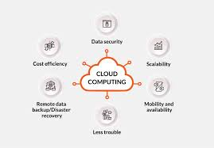
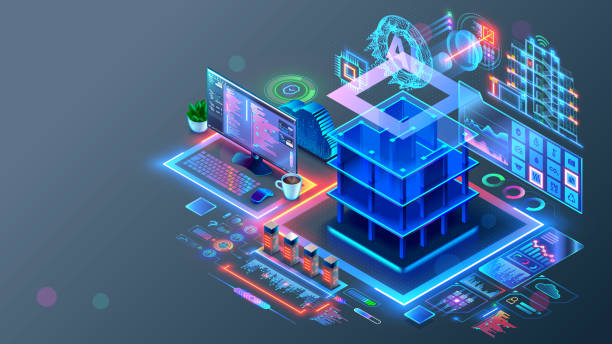

Delivering skilled workforce solutions for operational, technical, and project-based business requirements.
Enterprise-grade application development, automation platforms, and scalable digital systems.

Cloud migration, DevOps pipelines, infrastructure automation, and optimization services.
Secure and scalable networking solutions ensuring reliable communication infrastructure.

Civil and commercial infrastructure project execution with quality-focused delivery approaches.
AI-driven automation, analytics, GenAI solutions, and intelligent systems integration.